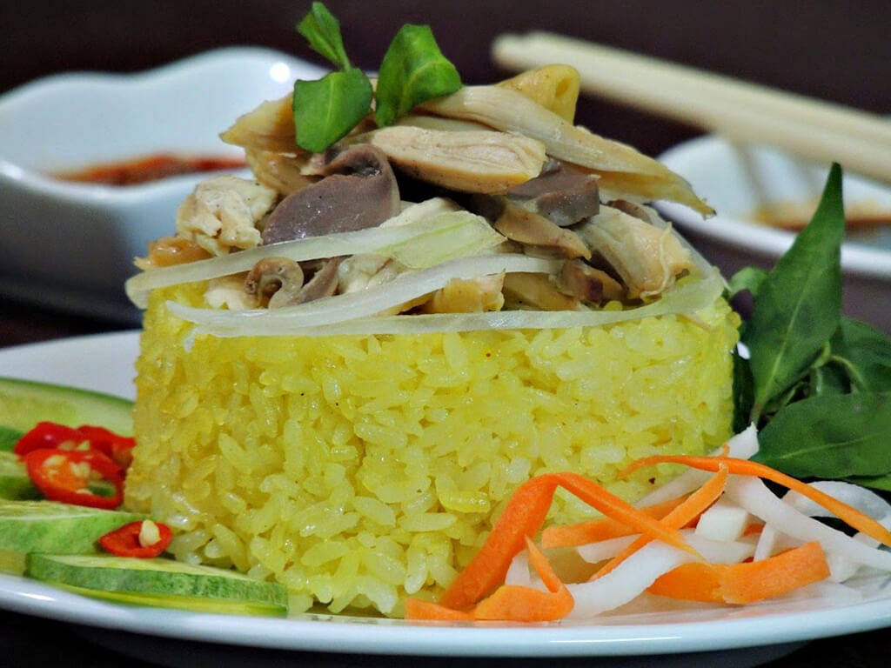

Thiên Đường Ẩm Thực
I.Mỳ Quảng
Mì Quảng (hay còn gọi là Mì Quảng Khô) là món bạn nhất định phải ăn khi đi du lịch Đà Nẵng. Sợi mì dày và dai được làm từ bột gạo cùng các nguyên liệu: thịt heo, thịt gà, tôm, chả lụa kèm với chút nước lèo từ xương hầm, ăn kèm rau sống tạo nên độ ngọt tự nhiên, đậm đà.
II.Bún Mắm Nêm
Vì đặc trưng khí hậu nắng nóng, nên những món bún trộn dần trở thành những món ngon Đà Nẵng được người dân yêu thích. Bún mắm nêm Đà Nẵng với thành phần gồm bún, thịt heo, rau sống trộn cùng các loại mắm đậm đà tạo nên hương vị khó quên.
III.Bún Thịt Nướng
Nếu bún mắm hơi “nặng đô” so với bạn thì hãy thử sang bún thịt nướng thơm ngon. Thịt heo được thái mỏng, ướp gia vị nhiều giờ đồng hồ rồi nướng trên than. Trộn bún, thịt và rau ăn cùng nước mắm rất vừa miệng.
IV.Bánh Canh
Bánh canh là món ăn bình dân nhưng không kém phần thú hút khách du lịch khi đến Đà Nẵng. Từ nước dùng làm từ thịt, xương heo cùng với sợi bánh dày và dai, bánh canh có rất nhiều loại như: bánh canh cá, bánh canh chả, bánh canh cua, hay đơn giản như bánh canh trứng cút.
V.Bánh Xèo
Bánh xèo, nem lụi cũng là một trong những món nên nằm trong danh sách ăn uống khi đi du lịch Đà Nẵng. Bánh xèo vàng giòn rụm ăn cùng xà lách, dưa chuột, chuối xanh… chấm nước mắm thơm ngậy. Bạn có thể gọi thêm vài xiên nem lụi làm từ thịt thăn nướng than rất nịnh vị.

VI.Bánh Tráng Cuốn Thịt Heo
Bánh tráng cuốn thịt heo thì vùng nào cũng có, nhưng Đà Nẵng “ghi điểm” với miếng thịt heo mềm, mỏng, bì béo ngậy kèm chút mỡ chạy dọc theo thớ thịt cực hấp dẫn.
VII.Bánh Bột Lọc
Bánh bột lọc được làm từ bột lọc như tên gọi của nó. Khi hấp, vỏ bánh trở nên trong vắt, nhìn thấy được nhân thịt tôm đỏ hồng bên trong. Bánh vừa dai, vừa mềm, dùng với nước mắm ớt hoặc mắm ruốc đều ngon.
VIII.Bê Thui
Bê thui Cầu Mống là đặc sản Đà Nẵng mà các tín đồ thích ăn ngon khi đi du lịch phải thử. Thịt bê thui chín mềm, lớp da mềm giòn được thái mỏng vừa ăn. Cuộn thịt với rau sống chấm nước mắm, ăn vào là cảm được ngay vị thịt ngon ngọt, nước mắm mặn mà thơm cay khó cưỡng.
IX.Gỏi Cá Nam Ô
Gỏi cá Nam Ô là đặc sản cực nổi tiếng của ngư dân làng Nam Ô tại Đà Nẵng. Gỏi được làm từ cá trích tươi Nam Ô và được ướp vị ngon đậm đà, không mùi tanh. Nước chấm mắm mè đậu phộng ăn kèm rau sống, rau tươi cuốn bánh tráng cực ghiền.
X.Cơm Gà
Cơm gà Đà Nẵng với nhiều cách chế biến như gà chiên, gà xé, gà nướng, nấu cùng loại gạo dẻo thơm và thịt gà dai ngọt cũng là một loại ẩm thực nổi tiếng ở Đà Nẵng được nhiều khách du lịch yêu thích.

XI.Chè Xoa Xoa Hạt Lựu
Chè xoa xoa hạt lựu là món chè giải khát lạ miệng được nhiều người dân Đà Nẵng ưa chuộng. Chè có vị ngọt mát của hạt lựu, thạch đen, xoa xoa, trân châu trong nước cốt dừa nguyên chất.
XII.Ốc Hút
Ở Đà Nẵng, người ta đi ăn ốc hút không phải để lấp đầy chiếc bụng đói mà là tận hưởng niềm vui dâng trào khi… hút ốc. Ốc hút Đà Nẵng thường được hấp hoặc luộc chín trong nước dừa nên sở hữu vị ngọt thanh tự nhiên, dùng kèm với nước mắm mặn ngọt thì địch thị là cực phẩm. Một đĩa ốc hút Đà Nẵng đầy ú ụ có giá rất bình dẫn, chỉ từ 10.000đ đến 20.000đ, nên được đông đảo học sinh, sinh viên, giới nhân viên văn phòng yêu thích.